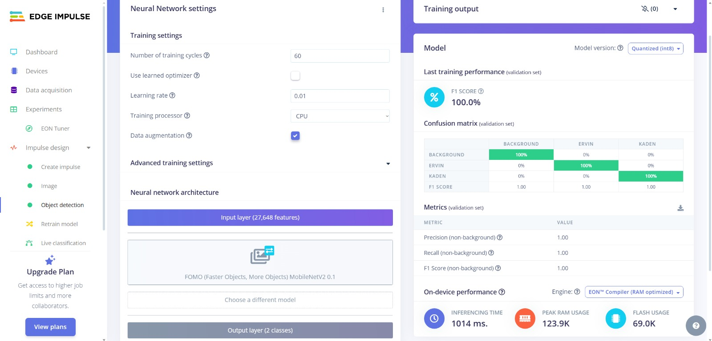
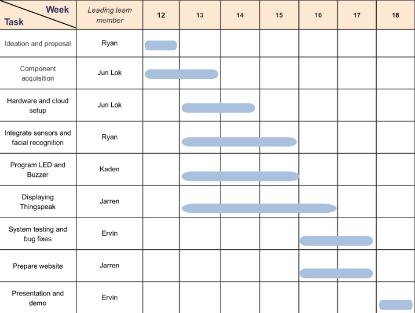

Table of Contents (hover side navigation bar)
Project Overview
In hospitals and pharmaceutical labs, controlled substances like opioids and research materials require secure access to prevent misuse, theft, or tampering.
PharmaGate is a smart double-door security system that introduces multi-layer authentication and environmental awareness for high-security zones.
The system combines QR-based app authentication, biometric verification (face and fingerprint), tailgating prevention, and fire-response mechanisms.
It also includes real-time data monitoring and visualization using ThingSpeak, ensuring security logs are transparent and auditable.
By enhancing physical and digital access control, PharmaGate improves both operational safety and regulatory compliance in sensitive medical environments.
Context
In hospitals and pharmaceutical labs, there are controlled environments that contain controlled drugs and important R&D development which requires strict access. According to a report done by PMCID “An increasing number of opioids and other controlled substances are being stolen from healthcare facilities, diverting medications from their intended medical use to be used or sold illicitly.” This highlights the issue of the apparent lack of security among healthcare facilities.
"How can we improve the security access and traceability of controlled drugs in hospitals and pharmaceutical labs?"
How It Works
User Verification
User verification is done via email and password using a mobile app connected to Firebase.
Enter Code
User enters a code displayed on the LCD screen above the first door.
Biometric Authentication
Biometric verification is performed using face ID and fingerprint scanning.
Tailgating Check
If no tailgating is detected, the user proceeds; if detected, a buzzer sounds, and the second door remains locked.
RFID Scanning for Exit
The user scans their RFID card for exit authentication through Firebase.
Emergency System
In case of a fire, a temperature and humidity sensor triggers the emergency system and unlocks all doors.
Technology Stack
Key Features
TR64
Using the TR64 methodology, we need to secure the IoT devices as well as the layers like communication, processing, cloud computing, and user interface layer.
Cryptographic Support: TLS/SSL for MQTT, Certificates
Identification & Authentication: Firebase, Number Codes, Biometrics
Network Protection: WiFi secured, MQTT with TLS
Secure Function Protection: Physical tamper protection
Data Protection: Firebase logs secured, no reuse of codes
Access Protection: Number Code > IR > Biometrics, locked sequence
Resiliency Support: Emergency override, alarm unlock
Security Audit: Logging of all attempts, Firebase logs
Vendor Disclosure Checklist
1. Cryptographic Support
| ID | Vendor Disclosure Checklist | Y | N | NA | Please Elaborate |
|---|---|---|---|---|---|
| CK-CS-01 | Do your devices and system employ current and industry accepted cryptographic techniques and best practices? (Examples of best practices include: use of approved algorithms, sufficient key length, approved random number generators, recommended crypto-period.) | ✔ | ✘ | ✔ | ihseighseighsighighsgshgisdhigsdhgkjsdhgjksdgjkdshgkjsdh |
| CK-CS-02 | Do you employ proper key management (generation, exchange, storage, destruction, replacement, etc.) techniques? | ✔ | ✘ | ✘ |
2. Security function protection
| ID | Vendor Disclosure Checklist | Y | N | NA | Please Elaborate |
|---|---|---|---|---|---|
| CK-FP-01 | Do you establish hardware Root-of-Trust? | ✔ | ✔ | ✔ | ihseighseighsighighsgshgisdhigsdhgkjsdhgjksdgjkdshgkjsdh |
| CK-FP-02 | Do you employ secure boot? | ✔ | ✔ | ✔ |
3. Identification and Authentication
| ID | Vendor Disclosure Checklist | Y | N | NA | Please Elaborate |
|---|---|---|---|---|---|
| CK-IA-01 | Do you employ unique, non-modifiable and verifiable identities for clients (user, device, gateway, application) and servers? | ✔ | ✔ | ✔ | |
| CK-IA-02 | Do you employ mutual authentication? For example, before establishing connections and after pre-defined intervals. | ✔ | ✔ | ✔ |
4. Network Protection
| ID | Vendor Disclosure Checklist | Y | N | NA | Please Elaborate |
|---|---|---|---|---|---|
| CK-NP-01 | Do you enforce network access control? For example, ensure explicit authorization to join a new network and/or allow remote access. | ✔ | ✔ | ✔ | |
| CK-NP-02 | Do you employ proven transport protocols with security controls properly activated? Examples include: Use of TLS for TCP payloads, Use of DTLS for UDP payloads. | ✔ | ✔ | ✔ | Examples include: Use of TLS for TCP payloads, use of DTLS for UDP payloads. |
| CK-NP-03 | Do you employ industry best practices for secure connectivity? Examples of industry best practices:Use of VPN or leased lines, Use of private mobile APNs from telecommunication operators when using a public mobile carrier network, Use of DNS pinning to prevent DNS spoofing, Use of traffic filtering based on type, port and destination, Use of certificate pinning, Employ TLS when using MQTT, Scan for open network ports, Use whitelisting to establish or deny connections from nontrusted sources. | ✔ | ✔ | ✔ | |
| CK-NP-04 | Do you segregate communication channels for trusted end points from non-trusted ones? Examples include: Use of VLAN, Use of firewalls for DMZ, Use of unidirectional security gateway, Physical isolation. | ✔ | ✔ | ✔ |
5. Data protection
| ID | Vendor Disclosure Checklist | Y | N | NA | Please Elaborate |
|---|---|---|---|---|---|
| CK-DP-01 | Do you protect the confidentiality and integrity of your sensitive data? in transit, in use, at rest | ✔ | ✔ | ✔ | |
| CK-DP-02 | Do you protect the authenticity and integrity of your codes and firmware? in transit, in use, at rest | ✔ | ✔ | ✔ | |
| CK-DP-03 | Do you ensure the authenticity and integrity of your data (e.g., inputs, commands and sensing data)? in transit, in use, at rest. Examples include: Validate incoming content-types, Validate response types, Validate HTTP methods against authorization credentials, Whitelist allowable HTTP methods, Define acceptable character set, Validate that input characters are acceptable, Encode/escape input and output. | ✔ | ✔ | ✔ | |
| CK-DP-04 | Do you enforce access control to detect and prevent unauthorized data access and exfiltration, and filter your outputs? | ✔ | ✔ | ✔ |
6. Access Protection
| ID | Vendor Disclosure Checklist | Y | N | NA | Please Elaborate |
|---|---|---|---|---|---|
| CK-AP-01 | Do you employ mechanisms to manage and secure local and/or remote access? Example mechanisms include: auto logoff, screen lock, lock-out for repeated unauthorised attempts, forced re-authorisation. | ✔ | ✔ | ✔ | |
| CK-AP-02 | Do you send out-of-band notifications on impactful operations and/or alerts (e.g., credential reset, security update failures)? | ✔ | ✔ | ✔ | |
| CK-AP-03 | Do you enforce access control to prevent unauthorised access to system interfaces, system files and removable media? | ✔ | ✔ | ✔ | |
| CK-AP-04 | Do you employ anti-tamper mechanisms for resistance, evidence, detection and/or response? | ✔ | ✔ | ✔ | |
| CK-AP-05 | Do you support multi-factor authentication for impactful operations (e.g., credential reset)? | ✔ | ✔ | ✔ |
7. Security Management
| ID | Vendor Disclosure Checklist | Y | N | NA | Please Elaborate |
|---|---|---|---|---|---|
| CK-MT-01 | Do you employ proper user and password management? Examples include: Enforce strong password policy, enforce no default passwords, ensure password recovery and reset mechanism are secure. | ✔ | ✔ | ✔ | |
| CK-MT-02 | Do you enforce proper access control to management functions? Examples include: Enforce least privilege, implement dual control for key management protection, use ABAC or RBAC, separation of duties for administrators. | ✔ | ✔ | ✔ | |
| CK-MT-03 | Do you employ malware mitigation mechanisms? Examples include: Ensure file integrity using cryptographic hash, baseline normal behavior, detect unauthorized software, prohibit insecure bootloaders. | ✔ | ✔ | ✔ | |
| CK-MT-04 | Do you secure remote management of devices, including sensor gateways? Examples include: Secure OTA updates, cryptographically secure software/firmware updates, platform integrity verification, restrict remote management to secure networks. | ✔ | ✔ | ✔ |
8. Resiliency Support
| ID | Vendor Disclosure Checklist | Y | N | NA | Please Elaborate |
|---|---|---|---|---|---|
| CK-RS-01 | Does your device support integrity self-test, error detection and correction for critical functions and return to a safe state? | ✔ | ✔ | ✔ | |
| CK-RS-02 | Do you safeguard against a compromised device from compromising the system? Examples include: Use of Perfect Forward Secrecy (PFS) for secure communication, Use of distinct secret keys for individual devices. | ✔ | ✔ | ✔ | |
| CK-RS-03 | Do you employ mechanisms against failures from resource exhaustion and/or malicious attacks such as DDoS? Examples include: Monitor to ensure that cloud resources are sufficient to sustain services, Detect resource exhaustion for early preventive or corrective actions, Control the execution of resource-intensive software, Enforce power thresholds, Limit the number of concurrent sessions, Operate with excess capacity. | ✔ | ✔ | ✔ | |
| CK-RS-04 | Do you conduct regular backups of system data (including settings)? | ✔ | ✔ | ✔ |
9. Security Audit
| ID | Vendor Disclosure Checklist | Y | N | NA | Please Elaborate |
|---|---|---|---|---|---|
| CK-AU-01 | Do your devices and system record enough information (e.g., who does what and when) in audit logs and flag significant events? Example of events include: user logins, logouts, and unsuccessful authentication attempts; connection, disconnection, and unsuccessful connection attempts; unsuccessful authorization attempts; access to sensitive data; import and export of data from removable media; any change in access privileges; creation, modification, or deletion of data by users; impactful and remote operations; security update failures; and physical or emergency access attempts where possible. | ✔ | ✔ | ✔ | |
| CK-AU-02 | Are your audit logs protected from modification, deletion, physical tampering, and sensitive data disclosure? | ✔ | ✔ | ✔ |
10. Lifecycle Protection
| ID | Vendor Disclosure Checklist | Y | N | NA | Please Elaborate |
|---|---|---|---|---|---|
| CK-LP-01 | Have you conducted threat modeling to identify, analyze and mitigate threats to the system? | ✔ | ✔ | ✔ | |
| CK-LP-02 | Did you design and develop the system using a secure systems engineering approach? | ✔ | ✔ | ✔ | |
| CK-LP-03 | Do you implement and maintain the system with components from a secure supply chain, with no known vulnerabilities? | ✔ | ✔ | ✔ | |
| CK-LP-05 | Do you ensure that the system is hardened before the "Operational" lifecycle phase? Examples of system hardening include: Remove all backdoors, remove all debug codes from the released version, change default configuration and disable unnecessary services, remove or tamper-covered JTAG, unneeded serial and ports before deployment, harden VM host properly, including disabling memory sharing between VM, remove default and hardcoded passwords. | ✔ | ✔ | ✔ | |
| CK-LP-06 | Do you maintain an inventory of connected devices, software and firmware versions, applied patches and updates throughout the “Operational” lifecycle stage? | ✔ | ✔ | ✔ | |
| CK-LP-07 | Do you conduct penetration testing and/or vulnerability assessment periodically, and before each major release? | ✔ | ✔ | ✔ | |
| CK-LP-08 | Do you establish proper vulnerability disclosure and management? Examples include: Ensure the supply chain's capability to provide upgrades and patches, provide vulnerability disclosure and processes to track and respond promptly, provide firmware and software patches/updates for vulnerabilities discovered, employ proper change management processes to manage security patches or updates, notify and/or allow user to approve/reject updates, patches and changes to user settings, disclose minimum support period. | ✔ | ✔ | ✔ | |
| CK-LP-09 | Do you ensure that identities, certificates and secrets are secured throughout the lifecycle (e.g., creation, provisioning, renewal and revocation)? | ✔ | ✔ | ✔ | |
| CK-LP-10 | Do you sanitize devices and systems of security data and sensitive user data, before the "Reuse or Dispose" lifecycle stages? | ✔ | ✔ | ✔ |
Security Threats & Solutions (click to flip)
Security Threat 1:
Lack of Authentication
Solution:
Implement ThingSpeak certificate for secure data communication
Security Threat 2:
Mobile App and Firebase data is not encrypted
Solution:
Ensure the use of TLS and HTTP for secure communication between the mobile app and Firebase
Data Visualisation with ThingsSpeak

The image above shows the data visualisation of the temperature and humidity sensor readings in real-time using ThingSpeak.

The image above shows the data visualisation of the user entry and exit records in real-time using ThingSpeak.

The image above shows the TLS encryption used for secure communication between the mobile app and Firebase.
3D printing designs
Initial Design

The image above shows the initial design of the 3D printed components for the PharmaGate system. It includes the housing for the sensors, servomotors, and other components that make up the security system.
Final Design Animation in AutoCAD
3D Prototype Animation - A demonstration of the door assembly in action.
First demo draft
Final demo
Hacking Methodologies
This section will be explaining what are the possible attacks that we will be facing.
1. Network Scanning
Discover devices on the same network as the target. It helps identify the ESP8266 (Door A) and any other devices connected to the network.
nmap -sn XXX.XXX.XXX.XXX/XXX)• Access to the Same Local Network
• No Network Segmentation
• Device Active on Network
2. Wi-Fi Sniffing
Captures Wi-Fi traffic to identify the ESP8266's IP address and other details, provided the network uses weak encryption or no encryption at all.
• Open or Weakly Encrypted Wi-Fi Network
• Wi-Fi Sniffing Tools
• Access to Network
3. Social Engineering
This method involves manipulating people within the organization to gain information or physical access to the system.
• Physical Access
• Tricking Personnel
4. P2P Communication Exploitation
This attack targets unencrypted or weakly encrypted P2P communication between devices, allowing the attacker to intercept or spoof the communication.
• Unencrypted P2P Communication
• Network Access
5. Physical Attack (Emergency Exit Override)
This involves using physical access to trigger the emergency exit (e.g., bypassing RFID or pressing a button) or tampering with the hardware.
• Physical Access
• Valid RFID or Button Signal
Future Scope
The current implementation of PharmaGate establishes a solid foundation for secure access control in critical environments. Below are some areas we envision expanding into for future iterations.
- Expand biometric options with voice recognition or retina scan.
- Integrate mobile notifications and alert escalation protocols.
- Implement access analytics and behavior pattern recognition using AI.
- Enable dynamic access privileges based on time or location.
- Support large-scale hospital integration with centralized dashboards.
Weekly Updates
Weekly updates will be posted here to keep track of the progress and changes made to the PharmaGate project.
Code Base
The code base for the PharmaGate project. It includes the mobile app, Arduino code for the ESP8266, ESP32 Cam, and the Firebase configuration files.
Mobile Application
Code Preview: Login Page
package com.example.iot_app
import android.content.Intent
import android.os.Bundle
import android.widget.Button
import android.widget.EditText
import android.widget.TextView
import android.widget.Toast
import androidx.appcompat.app.AppCompatActivity
import com.google.firebase.auth.FirebaseAuth
class MainActivity : AppCompatActivity() {
private lateinit var auth : FirebaseAuth
override fun onCreate(savedInstanceState: Bundle?) {
super.onCreate(savedInstanceState)
setContentView(R.layout.activity_main)
auth = FirebaseAuth.getInstance()
val emailField = findViewById<EditText>(R.id.email)
val passwordField = findViewById<EditText>(R.id.password)
val loginButton = findViewById<Button>(R.id.login_button)
val forgotpass = findViewById<TextView>(R.id.forgotpass)
loginButton.setOnClickListener {
val email = emailField.text.toString()
val password = passwordField.text.toString()
auth.signInWithEmailAndPassword(email, password)
.addOnCompleteListener { task ->
if (task.isSuccessful) {
startActivity(Intent(this, CodeInputActivity::class.java))
finish()
} else {
Toast.makeText(this, "Login Failed", Toast.LENGTH_SHORT).show()
}
}
}
forgotpass.setOnClickListener {
val intent = Intent(this, ForgotPassword::class.java)
startActivity(intent)
}
}
}
This code shows how the Login Page works with Authentication Service in FireBase
Code Preview: Code Input
package com.example.iot_app
import android.os.Bundle
import android.widget.Button
import android.widget.EditText
import android.widget.Toast
import com.google.android.material.snackbar.Snackbar
import androidx.appcompat.app.AppCompatActivity
import androidx.navigation.findNavController
import androidx.navigation.ui.AppBarConfiguration
import androidx.navigation.ui.navigateUp
import androidx.navigation.ui.setupActionBarWithNavController
import com.example.iot_app.databinding.ActivityCodeInputBinding
import com.google.firebase.auth.FirebaseAuth
import com.google.firebase.database.DatabaseReference
import com.google.firebase.database.FirebaseDatabase
class CodeInputActivity : AppCompatActivity() {
private lateinit var dbRef: DatabaseReference
private lateinit var auth: FirebaseAuth
override fun onCreate(savedInstanceState: Bundle?) {
super.onCreate(savedInstanceState)
setContentView(R.layout.activity_code_input)
auth = FirebaseAuth.getInstance()
val userId = auth.currentUser?.uid
dbRef = FirebaseDatabase.getInstance().reference.child("users").child(userId!!)
val codeField = findViewById<EditText>(R.id.code_input)
val submitButton = findViewById<Button>(R.id.submit_button)
submitButton.setOnClickListener {
val userCode = codeField.text.toString()
// First, read the generated code for this user
dbRef.child("generatedCode").get().addOnSuccessListener { snapshot ->
val generatedCode = snapshot.getValue(String::class.java)
// Only proceed if the entered code matches
if (userCode == generatedCode) {
dbRef.child("inputCode").setValue(userCode)
.addOnSuccessListener {
Toast.makeText(this, "Code Submitted", Toast.LENGTH_SHORT).show()
// Log only correct code
val timestamp = java.text.SimpleDateFormat("yyyy-MM-dd'T'HH:mm:ss").format(java.util.Date())
val globalLogRef = FirebaseDatabase.getInstance().reference.child("log").child(timestamp)
globalLogRef.setValue(mapOf(
"user" to auth.currentUser?.uid,
"code" to userCode
))
}
.addOnFailureListener {
Toast.makeText(this, "Failed to Submit", Toast.LENGTH_SHORT).show()
}
} else {
// Optional: just notify user, but do not log
Toast.makeText(this, "Incorrect Code", Toast.LENGTH_SHORT).show()
}
}.addOnFailureListener {
Toast.makeText(this, "Failed to read generated code", Toast.LENGTH_SHORT).show()
}
}
}
}
This code shows how Mobile App fetches the code generated from the ESP8266 from Firebase and compares to user input and determines if it is correct to unlock the door as well as logs entry in the Firebase database
1st Door code
Code Preview: ESP8266 Door Control, LCD display, IR sensor Anti-Tailgating and PIR for showing LCD code when someone is nearby
#include <ESP8266WiFi.h>
#include <WiFiClient.h>
#include <FirebaseESP8266.h>
#include <Servo.h>
#include <Wire.h>
#include <lcd_i2c.h> // Include the LCD library for I2C display
// WiFi credentials
#define WIFI_SSID "Jarren’s iphone"
#define WIFI_PASSWORD "idonthaveapassword"
// Firebase credentials
#define FIREBASE_HOST "iots-31a7f-default-rtdb.firebaseio.com"
#define FIREBASE_AUTH "guymQlP8DYzj92PmopMzF3h93ctKjioOao3svMuv"
//#define buzzer 2
FirebaseData fbdo;
FirebaseAuth auth;
FirebaseConfig config;
// LCD configuration
lcd_i2c lcd(0x3E, 16, 2); // Address 0x3E, 16 columns, 2 rows
// Servo configuration
Servo myservo;
int servoPin = D7; // Pin connected to the servo
// PIR sensor and IR sensor configuration
const int PIR = D6; // PIR sensor pin
const int IRSensor = D0; // IR sensor pin for tailgating detection
// Variables
unsigned long PrevMotion = 0;
const unsigned long five_min = 5 * 60 * 1000; // 5 minutes in milliseconds
String generatedCode;
String userID1 = "afszjUnCS2UNAEoD2RIHlvE6Drm2";
String userID2 = "t1J88HWxe8cDtnzhf3KIg9DFjVr1";
bool tailgatingDetected = false;
String fireStatus;
String rfidStatus;
String servoStatus;
// Tailgating detection state
bool irFirstHigh = false;
bool irLowAfterHigh = false;
unsigned long irFirstHighTime = 0;
const unsigned long tailgateWindow = 5000; // 5 seconds
// Variable to store the external trigger status as a string
String externalTriggerStatus = "false"; // "false" or the trigger type like "fire", "rfid", "servo"
// Declare the function prototype for handleDoorUnlock
void handleDoorUnlock(String userID);
int tonecount=0;
void setup() {
Serial.begin(115200);
// PIR sensor and IR sensor setup
pinMode(PIR, INPUT);
pinMode(IRSensor, INPUT);
// pinMode(buzzer,OUTPUT);
// WiFi connection
WiFi.begin(WIFI_SSID, WIFI_PASSWORD);
Serial.print("Connecting to WiFi...");
while (WiFi.status() != WL_CONNECTED) {
delay(500);
Serial.print(".");
}
Serial.println("\nWiFi connected");
// Firebase setup
config.database_url = FIREBASE_HOST;
config.signer.tokens.legacy_token = FIREBASE_AUTH;
Firebase.begin(&config, &auth);
// Generate one random 4-digit code and upload to both users
generatedCode = String(random(1000, 9999));
Firebase.setString(fbdo, "/users/" + userID1 + "/generatedCode", generatedCode);
Firebase.setString(fbdo, "/users/" + userID2 + "/generatedCode", generatedCode);
Firebase.setBool(fbdo, "/users/" + userID1 + "/doorUnlocked", false);
Firebase.setBool(fbdo, "/users/" + userID2 + "/doorUnlocked", false);
Serial.print("Generated Code: ");
Serial.println(generatedCode);
// Initialize LCD
lcd.begin();
lcd.setCursor(0, 0);
lcd.print("Generated Code:");
lcd.setCursor(0, 1);
lcd.print(generatedCode.c_str());
// Servo setup
myservo.attach(servoPin);
myservo.write(90); // Neutral position (locked)
}
void loop() {
int motionState = digitalRead(PIR);
int irState = digitalRead(IRSensor);
// --- PIR Motion detection ---
if (motionState == HIGH) {
Serial.println("Motion detected!");
PrevMotion = millis();
lcd.clear();
lcd.setCursor(0, 0);
lcd.print("Generated Code:");
lcd.setCursor(0, 1);
lcd.print(generatedCode.c_str());
handleDoorUnlock(userID1);
handleDoorUnlock(userID2);
} else {
if (millis() - PrevMotion > five_min) {
Serial
lcd.clear();
}
}
// --- IR Tailgating detection logic ---
if (irState == LOW) {
unsigned long now = millis();
if (!irFirstHigh) {
// First HIGH detected
irFirstHigh = true;
irFirstHighTime = now;
Serial.println("IR: First HIGH detected");
} else {
// Second LOW detected within 5 seconds (transition from HIGH -> LOW -> HIGH)
if (irFirstHigh && (now - irFirstHighTime <= 5000)) {
Serial.println("Tailgating detected (HIGH -> LOW -> HIGH)!");
if (Firebase.getString(fbdo,"/buzzer")){
String buzzer = fbdo.stringData();
if (buzzer=="false"){
Firebase.setString(fbdo,"/buzzer",true);
Serial.print("buzzer");
}
}
// Lock door immediately
myservo.write(90); // Lock the door
Firebase.setBool(fbdo, "/users/" + userID1 + "/doorUnlocked", false);
Firebase.setBool(fbdo, "/users/" + userID2 + "/doorUnlocked", false);
lcd.clear();
lcd.setCursor(0, 0);
// lcd.print("Tailgating Detected!");
// Tone for notification
delay(2000);
}
// Reset first HIGH time for next detection
irFirstHighTime = now;
}
}
// Reset if more than 5 seconds passed without detecting LOW state after first HIGH
if (irFirstHigh && millis() - irFirstHighTime > 5000) {
irFirstHigh = false; // Reset to await the next HIGH -> LOW -> HIGH pattern
}
// --- Check for Servo, RFID, or Fire triggers ---
checkExternalTriggers();
delay(100);
}
// Function to check for external triggers (servo, rfid, fire)
// Function to check for external triggers (servo, rfid, fire)
void checkExternalTriggers() {
if (Firebase.getString(fbdo,"/fire")){
String fire = fbdo.stringData();
if (fire=="true"){
myservo.write(180);
delay(5000);
myservo.write(90);
Firebase.setString(fbdo,"/fire",false);
Serial.print("fire");
}
}
if (Firebase.getString(fbdo,"/rfid")){
String rfid = fbdo.stringData();
if (rfid=="true"){
myservo.write(180);
delay(5000);
myservo.write(90);
Firebase.setString(fbdo,"/rfid",false);
Serial.print("rfid");
}
}
if (Firebase.getString(fbdo,"/servo")){
String servo = fbdo.stringData();
if (servo=="true"){
myservo.write(180);
delay(5000);
myservo.write(90);
Firebase.setString(fbdo,"/servo",false);
Serial.print("servo");
}
}
}
// Function to handle door unlock
void handleDoorUnlock(String userID) {
bool doorAlreadyUnlocked = false;
// Check if the door is already unlocked for the user
if (Firebase.getBool(fbdo, "/users/" + userID + "/doorUnlocked")) {
doorAlreadyUnlocked = fbdo.boolData();
}
if (doorAlreadyUnlocked) {
return; // Exit if door is already unlocked
}
// Check if the input code matches the generated code
if (Firebase.getString(fbdo, "/users/" + userID + "/inputCode")) {
String inputCode = fbdo.stringData();
Serial.print("Received inputCode for " + userID + ": ");
Serial.println(inputCode);
if (inputCode == generatedCode) {
Serial.println("Code matched for " + userID + ". Unlocking door.");
// Unlock the door using the servo
myservo.write(180); // Servo to unlock
delay(5000); // Keep the door unlocked for 5 seconds
myservo.write(90); // Lock the door again
// Update /face to true (this is the correct path now)
if (Firebase.getString(fbdo,"/face")){
String face = fbdo.stringData();
if (face=="false"){
Firebase.setString(fbdo,"/face",true);
Serial.print("done");
}
}
// Generate one random 4-digit code and upload to both users
generatedCode = String(random(1000, 9999));
Firebase.setString(fbdo, "/users/" + userID1 + "/generatedCode", generatedCode);
Firebase.setString(fbdo, "/users/" + userID2 + "/generatedCode", generatedCode);
Firebase.setBool(fbdo, "/users/" + userID1 + "/doorUnlocked", false);
Firebase.setBool(fbdo, "/users/" + userID2 + "/doorUnlocked", false);
Serial.print("Generated Code: ");
Serial.println(generatedCode);
// Initialize LCD
// lcd.begin();
lcd.setCursor(0, 0);
lcd.print("Generated Code:");
lcd.clear();
lcd.setCursor(0, 1);
lcd.print(generatedCode.c_str());
// Update Firebase to reflect door status
Firebase.setBool(fbdo, "/users/" + userID + "/doorUnlocked", true);
// Reset the input code in Firebase
Firebase.setString(fbdo, "/users/" + userID + "/inputCode", "0");
// Set the door back to locked status after the code is processed
Firebase.setBool(fbdo, "/users/" + userID + "/doorUnlocked", false);
// Display the result on the LCD
lcd.clear();
lcd.setCursor(0, 0);
lcd.print("Door Unlocked!");
delay(2000);
lcd.clear();
lcd.setCursor(0, 0);
lcd.print("Generated Code:");
lcd.setCursor(0, 1);
lcd.print(generatedCode.c_str());
}
}
}
his code shows how the esp8266 fetches data from the firebase and depending on different states, will turn the servo motor to unlock or lock the door as well as use IR sensor to detect tailgating and PIR sensor to detect motion for displaying the LCD screen and also use firebase to check if there is a fire alert to unlock the door and incorporate buzzer for tailgating detection and communicates with other ESPs via firebase to unlock the door
2nd Door code
Code Preview: ESP8266 LED indicator code
#include <ESP8266WiFi.h>
#include <FirebaseESP8266.h>
int RED = 15;
int GREEN = 13;
int BLUE = 12;
WiFiClient client;
#define WIFI_SSID "Doodles"
#define WIFI_PASSWORD "115811ah"
// Firebase credentials
#define FIREBASE_HOST "iots-31a7f-default-rtdb.firebaseio.com"
#define FIREBASE_AUTH "guymQlP8DYzj92PmopMzF3h93ctKjioOao3svMuv"
FirebaseData fbdo;
FirebaseAuth auth;
FirebaseConfig config;
void FirebaseConnection(){
Serial.begin(115200);
WiFi.begin(WIFI_SSID, WIFI_PASSWORD);
Serial.print("Connecting to WiFi...");
while (WiFi.status() != WL_CONNECTED) {
delay(500);
Serial.print(".");
}
Serial.println("\nWiFi connected");
delay(100);
config.database_url = FIREBASE_HOST;
config.signer.tokens.legacy_token = FIREBASE_AUTH;
Firebase.begin(&config, &auth);
}
void setup() {
Serial.begin(115200);
FirebaseConnection();
pinMode(RED, OUTPUT);
pinMode(GREEN, OUTPUT);
pinMode(BLUE, OUTPUT);
}
void loop() {
if (Firebase.getString(fbdo, "/led")) {
String ledValue = fbdo.stringData();
Serial.println("LED Value from Firebase: " + ledValue);
if (ledValue == "true") {
digitalWrite(RED, HIGH);
digitalWrite(GREEN, LOW);
digitalWrite(BLUE, LOW);
Serial.println("LED is GREEN");
} else if (ledValue == "false") {
digitalWrite(RED, LOW);
digitalWrite(GREEN, HIGH);
digitalWrite(BLUE, LOW);
Serial.println("LED is RED");
} else {
digitalWrite(RED, LOW);
digitalWrite(GREEN, LOW);
digitalWrite(BLUE, LOW);
Serial.println("LED is OFF");
}
} else {
Serial.println("Error retrieving 'led' value from Firebase: " + fbdo.errorReason());
}
delay(1000);
}
This code shows how the esp8266 fetches data from the firebase and depending on different states, will show different colours on the RGB LED
Code Preview: ESP32 CAM with Fingerprint,ultrasonic senosr and ThingsSpeak record
// Orange to IO14
// White to IO15
//Trig to IO12
//Echo to IO13
//R to 13
//G to 12
//B to 14
#include <SPI.h>
#include <Wire.h>
#include <WiFi.h>
#include <ThingSpeak.h>
#include <esp_now.h>
#include <FirebaseESP32.h>
#include <Adafruit_Fingerprint.h> //https://github.com/adafruit/Adafruit-Fingerprint-Sensor-Library
#include <esp_camera.h>
#include <String>
// WiFi credentials
//#define WIFI_SSID "SINGTEL-1520"
//#define WIFI_PASSWORD "zvLsesXLzs9P"
WiFiClient client;
#define WIFI_SSID "Doodles"
#define WIFI_PASSWORD "115811ah"
// ********** ThingSpeak Credentials **********
unsigned long channelID = 3036540; // Your ThingSpeak channel ID
const char* apiKey = "QJF66R42QYX54DGO"; // Your WriteAPIKey for the channel
int message = 0;
//************************************************************************
// Fingerprint scanner Pins
#define Finger_Rx 14 // GPIO 16 (RX pin for fingerprint sensor)
#define Finger_Tx 15 // GPIO 17 (TX pin for fingerprint sensor)
//************************************************************************
// Updated Pins for ultrasonic sensor
const int trigPin = 12;
const int echoPin = 13;
#define SOUND_SPEED 0.034
#define CM_TO_INCH 0.393701
long duration;
float distanceCm;
String nameFinger = ""; // Use String for easier manipulation
String nameFace = ""; // Use String for easier manipulation
HardwareSerial mySerial(1); // Use hardware serial (Serial1) for ESP32
Adafruit_Fingerprint finger = Adafruit_Fingerprint(&mySerial);
int FingerID = 0; // The Fingerprint ID from the scanner
uint8_t id;
// Firebase credentials
#define FIREBASE_HOST "iots-31a7f-default-rtdb.firebaseio.com"
//#define FIREBASE_HOST "iots-bed43-default-rtdb.asia-southeast1.firebasedatabase.app"
#define FIREBASE_AUTH "guymQlP8DYzj92PmopMzF3h93ctKjioOao3svMuv"
//#define FIREBASE_AUTH "d9mLYmLy4iJEwrDNO8eDiDgZWtvRtTGq1JNu1V1j"
FirebaseData fbdo;
FirebaseAuth auth;
FirebaseConfig config;
// Flag to indicate that fingerprint detection has already been done
bool fingerprintDetected = false;
bool lockFingerprintDetection = false; // Lock fingerprint detection after a valid scan
bool cameraInitialized = false;
bool checkFirebaseSignal() {
String signalValue = "";
String fireValue = "";
// Retrieve the signal value from Firebase
if (Firebase.getString(fbdo, "/face")) {
signalValue = fbdo.stringData(); // Get the data returned from Firebase
Serial.println("Signal from Firebase: " + signalValue);
if (signalValue == "true") {
// If the signal is "start", return true to start the process
return true;
}
} else {
Serial.println("Error getting signal from Firebase: " + fbdo.errorReason());
}
return false; // If signal is not "start", return false
}
void FirebaseConnection(){
Serial.begin(115200);
WiFi.begin(WIFI_SSID, WIFI_PASSWORD);
Serial.print("Connecting to WiFi...");
while (WiFi.status() != WL_CONNECTED) {
delay(500);
Serial.print(".");
}
Serial.println("\nWiFi connected");
delay(100);
config.database_url = FIREBASE_HOST;
config.signer.tokens.legacy_token = FIREBASE_AUTH;
Firebase.begin(&config, &auth);
}
void setup() {
Serial.begin(115200);
FirebaseConnection();
// set the data rate for the sensor serial port
mySerial.begin(57600, SERIAL_8N1, Finger_Rx, Finger_Tx); // Use hardware serial (Serial1)
Serial.println("\n\nAdafruit finger detect test");
if (finger.verifyPassword()) {
Serial.println("Found fingerprint sensor!");
} else {
Serial.println("Did not find fingerprint sensor :(");
while (1) { delay(1); }
}
//---------------------------------------------
finger.getTemplateCount();
Serial.print("Sensor contains ");
Serial.print(finger.templateCount);
Serial.println(" templates");
Serial.println("Waiting for valid finger...");
// Enroll multiple fingerprints by calling the function with different IDs
enrollFingerprint(1); // Enroll first fingerprint with ID 1
pinMode(trigPin, OUTPUT);
pinMode(echoPin, INPUT);
}
void loop() {
// First, check the fire value from Firebase
if (Firebase.getString(fbdo, "/fire")) {
String fireValue = fbdo.stringData();
Serial.println("Fire Value: " + fireValue);
// If fire is detected, wait for 2 seconds before continuing
if (fireValue == "true") {
Serial.println("Fire detected! Waiting for 2 seconds...");
delay(2000); // Wait for 2 seconds before checking for the signal
return;
} else {
Serial.println("No fire detected.");
}
} else {
Serial.println("Error retrieving 'fire' value from Firebase.");
}
// Now, check for the signal to proceed with fingerprint scanning and other actions
if (checkFirebaseSignal()) {
// Proceed with the fingerprint scanning and other actions if the signal is "start"
Serial.println("Signal received! Starting process...");
// Check if fingerprint has been detected and locked
if (!fingerprintDetected && !lockFingerprintDetection) {
// Get the Fingerprint ID
FingerID = getFingerprintID(); // Get the Fingerprint ID from the Scanner
nameFinger = String(FingerID); // Convert FingerID to String
if (FingerID > 0) {
Serial.println("Correct fingerprint detected.");
// Set the fingerprintDetected flag to true to prevent further fingerprint scanning
fingerprintDetected = true;
lockFingerprintDetection = true; // Lock fingerprint detection
// Initialize camera after detecting a valid fingerprint (only once)
if (!cameraInitialized) {
Serial.println("Initializing camera...");
setupCamera(); // Initialize camera after detecting valid fingerprint
// Wait until the camera is fully initialized
while (!cameraInitialized) {
delay(100); // Small delay to allow time for camera to initialize
}
Serial.println("Camera initialized successfully");
}
// Start facial recognition after fingerprint detection
startFacialRecognition(); // Start facial recognition process
}
}
} else {
Serial.println("Waiting for the signal...");
}
delay(1000); // Poll Firebase every second or adjust the timing as needed
}
// Modify getFingerprintID to return early if fingerprintDetected is true
int getFingerprintID() {
if (fingerprintDetected) {
// If fingerprint has already been detected, skip the scanning process
return FingerID;
}
uint8_t p = finger.getImage();
switch (p) {
case FINGERPRINT_OK:
Serial.println("Image taken");
break;
case FINGERPRINT_NOFINGER:
Serial.println("No finger detected");
return 0;
case FINGERPRINT_PACKETRECIEVEERR:
Serial.println("Communication error");
return -2;
case FINGERPRINT_IMAGEFAIL:
Serial.println("Imaging error");
return -2;
default:
Serial.println("Unknown error");
return -2;
}
// OK success!
p = finger.image2Tz();
switch (p) {
case FINGERPRINT_OK:
Serial.println("Image converted");
break;
case FINGERPRINT_IMAGEMESS:
Serial.println("Image too messy");
return -1;
case FINGERPRINT_PACKETRECIEVEERR:
Serial.println("Communication error");
return -2;
case FINGERPRINT_FEATUREFAIL:
Serial.println("Could not find fingerprint features");
return -2;
case FINGERPRINT_INVALIDIMAGE:
Serial.println("Could not find fingerprint features");
return -2;
default:
Serial.println("Unknown error");
return -2;
}
// OK converted!
p = finger.fingerFastSearch();
if (p == FINGERPRINT_OK) {
Serial.println("Found a print match!");
Serial.print("Found ID #");
Serial.print(finger.fingerID); // Corrected here, no parentheses
Serial.print(" with confidence of ");
Serial.println(finger.confidence);
// Set the FingerID for later use
FingerID = finger.fingerID;
} else if (p == FINGERPRINT_PACKETRECIEVEERR) {
Serial.println("Communication error");
return -2;
} else if (p == FINGERPRINT_NOTFOUND) {
Serial.println("Did not find a match");
return -1;
} else {
Serial.println("Unknown error");
return -2;
}
return finger.fingerID;
}
// Add a function to reset fingerprint detection flag after facial recognition is done
void resetFingerprintDetection() {
fingerprintDetected = false;
lockFingerprintDetection = false; // Unlock fingerprint detection again
}
//* Enroll Fingerprint *****************
void enrollFingerprint(uint8_t id) {
int p = -1;
Serial.print("Enrolling ID #");
Serial.println(id);
// Capture the first image
while (p != FINGERPRINT_OK) {
Serial.println("Place finger on sensor...");
p = finger.getImage();
if (p == FINGERPRINT_NOFINGER) {
delay(100);
} else if (p != FINGERPRINT_OK) {
Serial.println("Error capturing first image.");
}
}
p = finger.image2Tz(1);
if (p != FINGERPRINT_OK) {
Serial.println("Image conversion failed.");
return;
}
Serial.println("Remove finger...");
delay(5000); // Add delay (5 seconds) to ensure the user removes their finger
// Wait until the first finger is removed
while (p != FINGERPRINT_NOFINGER) {
p = finger.getImage();
delay(100);
}
Serial.println("Place same finger again...");
p = -1;
// Capture the second image
while (p != FINGERPRINT_OK) {
p = finger.getImage();
if (p == FINGERPRINT_NOFINGER) {
delay(100);
} else if (p != FINGERPRINT_OK) {
Serial.println("Error capturing second image.");
}
}
p = finger.image2Tz(2);
if (p != FINGERPRINT_OK) {
Serial.println("Second image conversion failed.");
return;
}
p = finger.createModel();
if (p != FINGERPRINT_OK) {
Serial.println("Failed to create fingerprint model.");
return;
}
p = finger.storeModel(id);
if (p == FINGERPRINT_OK) {
Serial.println("Fingerprint successfully enrolled!");
} else {
Serial.println("Failed to store fingerprint.");
}
}
//Facial Recognition
#include
#include "edge-impulse-sdk/dsp/image/image.hpp"
#include "esp_camera.h"
// Camera configuration (AI Thinker)
#define CAMERA_MODEL_AI_THINKER // Has PSRAM
#if defined(CAMERA_MODEL_ESP_EYE)
#define PWDN_GPIO_NUM -1
#define RESET_GPIO_NUM -1
#define XCLK_GPIO_NUM 4
#define SIOD_GPIO_NUM 18
#define SIOC_GPIO_NUM 23
#define Y9_GPIO_NUM 36
#define Y8_GPIO_NUM 37
#define Y7_GPIO_NUM 38
#define Y6_GPIO_NUM 39
#define Y5_GPIO_NUM 35
#define Y4_GPIO_NUM 14
#define Y3_GPIO_NUM 13
#define Y2_GPIO_NUM 34
#define VSYNC_GPIO_NUM 5
#define HREF_GPIO_NUM 27
#define PCLK_GPIO_NUM 25
#elif defined(CAMERA_MODEL_AI_THINKER)
#define PWDN_GPIO_NUM 32
#define RESET_GPIO_NUM -1
#define XCLK_GPIO_NUM 0
#define SIOD_GPIO_NUM 26
#define SIOC_GPIO_NUM 27
#define Y9_GPIO_NUM 35
#define Y8_GPIO_NUM 34
#define Y7_GPIO_NUM 39
#define Y6_GPIO_NUM 36
#define Y5_GPIO_NUM 21
#define Y4_GPIO_NUM 19
#define Y3_GPIO_NUM 18
#define Y2_GPIO_NUM 5
#define VSYNC_GPIO_NUM 25
#define HREF_GPIO_NUM 23
#define PCLK_GPIO_NUM 22
#else
#error "Camera model not selected"
#endif
#define EI_CAMERA_RAW_FRAME_BUFFER_COLS 320
#define EI_CAMERA_RAW_FRAME_BUFFER_ROWS 240
#define EI_CAMERA_FRAME_BYTE_SIZE 3
static camera_config_t camera_config = {
.pin_pwdn = PWDN_GPIO_NUM,
.pin_reset = RESET_GPIO_NUM,
.pin_xclk = XCLK_GPIO_NUM,
.pin_sscb_sda = SIOD_GPIO_NUM,
.pin_sscb_scl = SIOC_GPIO_NUM,
.pin_d7 = Y9_GPIO_NUM,
.pin_d6 = Y8_GPIO_NUM,
.pin_d5 = Y7_GPIO_NUM,
.pin_d4 = Y6_GPIO_NUM,
.pin_d3 = Y5_GPIO_NUM,
.pin_d2 = Y4_GPIO_NUM,
.pin_d1 = Y3_GPIO_NUM,
.pin_d0 = Y2_GPIO_NUM,
.pin_vsync = VSYNC_GPIO_NUM,
.pin_href = HREF_GPIO_NUM,
.pin_pclk = PCLK_GPIO_NUM,
.xclk_freq_hz = 20000000,
.ledc_timer = LEDC_TIMER_0,
.ledc_channel = LEDC_CHANNEL_0,
.pixel_format = PIXFORMAT_JPEG,
.frame_size = FRAMESIZE_QVGA,
.jpeg_quality = 12,
.fb_count = 1,
.fb_location = CAMERA_FB_IN_PSRAM,
.grab_mode = CAMERA_GRAB_WHEN_EMPTY,
};
static bool debug_nn = false;
static bool is_initialised = false;
uint8_t *snapshot_buf;
// Function to initialize the camera for facial recognition
void setupCamera() {
Serial.println("Edge Impulse Inferencing Demo");
if (ei_camera_init() == false) {
ei_printf("Failed to initialize Camera!\r\n");
cameraInitialized = false; // Make sure it's marked as false if initialization fails
} else {
ei_printf("Camera initialized\r\n");
cameraInitialized = true; // Set to true after a successful initialization
}
ei_printf("\nStarting continuous inference in 2 seconds...\n");
ei_sleep(2000); // Wait for camera to be ready
}
// Facial Recognition
void startFacialRecognition() {
bool objectDetected = false;
Serial.println("Starting Facial Recognition...");
while (!objectDetected) {
if (Firebase.getString(fbdo, "/fire")) {
String fireValue = fbdo.stringData();
Serial.println("Fire Value: " + fireValue);
// If fire is detected, wait for 2 seconds before proceeding
if (fireValue == "true") {
Serial.println("Fire detected! Waiting for 2 seconds...");
delay(2000); // Wait for 2 seconds
Serial.println("Continuing fingerprint scan after waiting for fire...");
Firebase.setString(fbdo,"/face","false");
resetFingerprintDetection();
return;
} else {
Serial.println("No fire detected.");
}
} else {
Serial.println("Error retrieving 'fire' value from Firebase.");
}
// Ultrasonic distance measurement
digitalWrite(trigPin, LOW);
delayMicroseconds(2);
digitalWrite(trigPin, HIGH);
delayMicroseconds(10);
digitalWrite(trigPin, LOW);
duration = pulseIn(echoPin, HIGH);
distanceCm = duration * SOUND_SPEED / 2;
Serial.print("Distance (cm): ");
Serial.println(distanceCm);
// Check if the person is too far or too close
if (distanceCm < 30) {
Serial.println("Too Close!\n");
Firebase.setString(fbdo, "/led", "false");
} else if (distanceCm > 60) {
Serial.println("Too Far!\n");
Firebase.setString(fbdo, "/led", "false");
} else {
Serial.println("Remain Still & Look at the Camera.\n");
Firebase.setString(fbdo, "/led", "true");
}
// Simulate sleep to allow time for recognition (replace with actual sleep function if needed)
delay(5); // Use a delay instead of ei_sleep() if you are not using Edge Impulse
// Capture the image for facial recognition
snapshot_buf = (uint8_t*)malloc(EI_CAMERA_RAW_FRAME_BUFFER_COLS * EI_CAMERA_RAW_FRAME_BUFFER_ROWS * EI_CAMERA_FRAME_BYTE_SIZE);
if(snapshot_buf == nullptr) {
Serial.println("ERR: Failed to allocate snapshot buffer!");
return;
}
ei::signal_t signal;
signal.total_length = EI_CLASSIFIER_INPUT_WIDTH * EI_CLASSIFIER_INPUT_HEIGHT;
signal.get_data = &ei_camera_get_data;
if (ei_camera_capture((size_t)EI_CLASSIFIER_INPUT_WIDTH, (size_t)EI_CLASSIFIER_INPUT_HEIGHT, snapshot_buf) == false) {
Serial.println("Failed to capture image");
free(snapshot_buf);
return;
}
ei_impulse_result_t result = { 0 };
EI_IMPULSE_ERROR err = run_classifier(&signal, &result, debug_nn);
if (err != EI_IMPULSE_OK) {
Serial.printf("ERR: Failed to run classifier (%d)\n", err);
free(snapshot_buf);
return;
}
Serial.printf("Predictions (DSP: %d ms., Classification: %d ms., Anomaly: %d ms.): \n", result.timing.dsp, result.timing.classification, result.timing.anomaly);
#if EI_CLASSIFIER_OBJECT_DETECTION == 1
Serial.println("Object detection bounding boxes:");
bool bb_found = false; // Set to true if any bounding box is detected
for (uint32_t i = 0; i < result.bounding_boxes_count; i++) {
ei_impulse_result_bounding_box_t bb = result.bounding_boxes[i];
if (bb.value == 0) {
continue;
}
Serial.printf(" %s (%f) [ x: %u, y: %u, width: %u, height: %u ]\r\n", bb.label, bb.value, bb.x, bb.y, bb.width, bb.height);
// Update bb_found if any bounding box with value > 0 is found
bb_found = true;
// Check for specific faces and set objectDetected flag
if (strcmp(bb.label, "Kaden") == 0) {
Serial.printf("Detected: Kaden - %d%%\n", int(bb.value * 100));
objectDetected = true;
nameFace = 1;
break; // Exit once Kaden is detected
} else if (strcmp(bb.label, "Ervin") == 0) {
Serial.printf("Detected: Ervin - %d%%\n", int(bb.value * 100));
objectDetected = true;
nameFace = 2;
break; // Exit once Ervin is detected
} else if (strcmp(bb.label, "robert downey jr") == 0) {
Serial.printf("Detected: RDj - %d%%\n", int(bb.value * 100));
objectDetected = true;
break; // Exit once RDj is detected
}
}
if (!bb_found) {
Serial.println("No objects found");
Serial.println("Detected: No object detected\n");
}
#else
Serial.println("Predictions:");
for (uint16_t i = 0; i < EI_CLASSIFIER_LABEL_COUNT; i++) {
Serial.printf(" %s: %.5f\r\n", ei_classifier_inferencing_categories[i], result.classification[i].value);
}
#endif
#if EI_CLASSIFIER_HAS_ANOMALY
Serial.printf("Anomaly prediction: %.3f\r\n", result.anomaly);
#endif
#if EI_CLASSIFIER_HAS_VISUAL_ANOMALY
Serial.println("Visual anomalies:");
for (uint32_t i = 0; i < result.visual_ad_count; i++) {
ei_impulse_result_bounding_box_t bb = result.visual_ad_grid_cells[i];
if (bb.value == 0) {
continue;
}
Serial.printf(" %s (%f) [ x: %u, y: %u, width: %u, height: %u ]\r\n", bb.label, bb.value, bb.x, bb.y, bb.width, bb.height);
}
#endif
// Clean up the buffer
free(snapshot_buf);
}
Serial.println("Face Recognized! Facial recognition complete.");
Firebase.setString(fbdo,"/servo","true");
Firebase.setString(fbdo,"/face","false");
delay(100);
//Initialize ThingSpeak
ThingSpeak.begin(client);
ThingSpeak.setField(1, String(nameFinger));
ThingSpeak.setField(2, String(nameFace));
int x = ThingSpeak.writeFields(channelID, apiKey);
if (x == 200) {
Serial.println("Channel update successful. ");
}
else {
Serial.println("Problem updating channel. HTTP error code " + String(x));
}
delay(2000);
resetFingerprintDetection();
}
// Function to initialize the camera for Edge Impulse
bool ei_camera_init(void) {
if (is_initialised) return true;
esp_err_t err = esp_camera_init(&camera_config);
if (err != ESP_OK) {
Serial.printf("Camera init failed with error 0x%x\n", err);
return false;
}
sensor_t * s = esp_camera_sensor_get();
if (s->id.PID == OV3660_PID) {
s->set_vflip(s, 1);
s->set_brightness(s, 1);
s->set_saturation(s, 0);
}
is_initialised = true;
return true;
}
// Function to deinitialize the camera
void ei_camera_deinit(void) {
esp_err_t err = esp_camera_deinit();
if (err != ESP_OK) {
ei_printf("Camera deinit failed\n");
return;
}
is_initialised = false;
return;
}
// Function to capture an image for Edge Impulse
bool ei_camera_capture(uint32_t img_width, uint32_t img_height, uint8_t *out_buf) {
bool do_resize = false;
if (!is_initialised) {
ei_printf("ERR: Camera is not initialized\r\n");
return false;
}
camera_fb_t *fb = esp_camera_fb_get();
if (!fb) {
ei_printf("Camera capture failed\n");
return false;
}
bool converted = fmt2rgb888(fb->buf, fb->len, PIXFORMAT_JPEG, snapshot_buf);
esp_camera_fb_return(fb);
if(!converted){
ei_printf("Conversion failed\n");
return false;
}
if ((img_width != EI_CAMERA_RAW_FRAME_BUFFER_COLS)
|| (img_height != EI_CAMERA_RAW_FRAME_BUFFER_ROWS)) {
do_resize = true;
}
if (do_resize) {
ei::image::processing::crop_and_interpolate_rgb888(
out_buf,
EI_CAMERA_RAW_FRAME_BUFFER_COLS,
EI_CAMERA_RAW_FRAME_BUFFER_ROWS,
out_buf,
img_width,
img_height);
}
return true;
}
// Function to get image data for Edge Impulse
static int ei_camera_get_data(size_t offset, size_t length, float *out_ptr) {
size_t pixel_ix = offset * 3;
size_t pixels_left = length;
size_t out_ptr_ix = 0;
while (pixels_left != 0) {
out_ptr[out_ptr_ix] = (snapshot_buf[pixel_ix + 2] << 16) + (snapshot_buf[pixel_ix + 1] << 8) + snapshot_buf[pixel_ix];
out_ptr_ix++;
pixel_ix += 3;
pixels_left--;
}
return 0;
}
This code shows how we are able to connect ESP32 CAM to edge impulse for face recognition as well as incorporate ultrasonic sensor to determine optimal distance for face detection and send it over to firebase for RGB led. As well as registering and checking of fingerprint and recording data to ThingSpeak for visualisation
Code Base Images
Below are some images that work together with our code base to make necessary features
Edge Impulse Studio for model training and deployment
Gantt Chart
The Gantt chart below outlines the project timeline, including key milestones and tasks.
Contribution
Breakdown of contributions by team members:
- Team Leader: John Doe - Project Management, Mobile App Development
- Hardware Specialist: Jane Smith - Circuit Design, Sensor Integration
- Software Engineer: Alex Johnson - Backend Development, Firebase Integration
- UI/UX Designer: Emily Davis - User Interface Design, User Experience Testing
- Security Analyst: Michael Brown - Security Threat Analysis, TR64 Implementation
- Documentation Specialist: Sarah Wilson - Project Documentation, Gantt Chart Creation